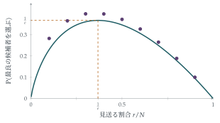

STEP I 2001、第14問
先に進む前に問題を読んでおこう。問題は STEP Support Programme の問題データベースにある： step.maths.org/questions/01-s1-q14
導入
あなたは候補者を1人ずつ面接し、その場で決断しなければならない。この人を採用して終わりにするか、永久に不採用として次の人に会うかである。あなたが望むのは最も優れた人物である。早く採用しすぎれば、より優れた人を逃す可能性が高い。待ちすぎれば、最良の人はすでに去ってしまっている可能性が高い。どうすればよいだろうか。
確率論で最も有名な結果の一つである答えは、次のとおりである。最初の \(37\%\) の候補者を見送り、その後、見送った全員より優れた最初の候補者を採用せよ。この方法は約 \(37\%\) の確率で成功し、\(37\%\) とは \(\frac1e\) のことである。この問題では基本となる確率を計算し、姉妹問題である STEP II 2006 の問題（演習に収録）では、この戦略の最も単純な形、すなわち最初の1人だけを見送る場合を分析する。
取りかかる前に
無作為な順序で面接するとき、全体で最良の候補者が最初の \(n\) 人の中にいる確率はいくらか。
最良の候補者は \(N\) 個の位置のどこにも等しい確率でいるので、その確率は \(\frac nN\) である。
順を追って解く
段階 1 最初の \(n\) 人の中の最良が全体の最良である
最初の \(n\) 人の中の最良が全体の最良であるのは、全体の最良が最初の \(n\) 人の中にいるときであり、かつそのときに限る。よって確率は \(\frac nN\) である。■
段階 2 最良または2番目
最初の \(n\) 人の中の最良が全体の2番目であるのは、2番目の候補者が最初の \(n\) 人の中にいて、最良の候補者がいないときであり、かつそのときに限る。その確率はいくらか。
2番目の候補者は確率 \(\frac nN\) で最初の \(n\) 人の中にいる。このとき、最良の候補者は残りの \(N - 1\) 個の位置のいずれかにあり、そのうち \(N - n\) 個が最初の \(n\) 人より後ろである。よって \[\mathrm{P}(\text{最良または2番目}) = \frac nN + \frac nN\cdot\frac{N - n}{N - 1}. \qed\] \(N = 4\), \(n = 2\) のとき、\(\frac12 + \frac12\cdot\frac23 = \frac56\) である。上位2人の候補者が4つの位置のどこに入るかを列挙すると（順序を区別した \(12\) 通りの配置はすべて同様に確からしい）、最初の2人の中の最良が上位2人のいずれかになるのは、上位2人がともに位置 \(3\) と \(4\) に来る \(2\) 通りを除くすべての場合である。よって \(\frac{10}{12} = \frac56\) となる。
段階 3 最適戦略
戦略：最初の \(r\) 人の候補者を見送り、その後、見送った全員より優れた最初の候補者を採用する。最良の候補者が位置 \(k > r\) にいるとき、この戦略がその人を選ぶのはどのような場合か。
この戦略が位置 \(k\) にいる最良の候補者を選ぶのは、位置 \(r + 1, \ldots, k - 1\) のどの候補者も最初の \(r\) 人全員を上回らないとき、すなわち最初の \(k - 1\) 人の中の最良が最初の \(r\) 人の中にいるときであり、かつそのときに限る。段階1（\(N\) を \(k - 1\) に置き換えたもの）により、この確率は \(\frac{r}{k - 1}\) である。各位置 \(k\) の確率は \(\frac1N\) であるから \[\mathrm{P}(\text{成功}) = \frac1N\sum_{k=r+1}^{N}\frac{r}{k - 1} = \frac rN\Bigl(\frac1r + \frac{1}{r + 1} + \cdots + \frac{1}{N - 1}\Bigr).\]
\(N\) が大きいとき、\(x = \frac rN\) とおく。和はおよそ \(\ln\frac{N}{r}\) である。\(x\ln\frac1x\) を最大にする \(x\) の値は何か。
成功確率はおよそ \(x\ln\frac1x\) である。微分すると、\(x = \frac1e\) のとき \(\ln\frac1x - 1 = 0\) となり、最大値は \(\frac1e \approx 0.368\) である（図 12.12.1）。

振り返り
位置の対称性（symmetry）。 無作為な順序では、各候補者はどの位置にも等しい確率でいる。このことから直ちに \(\frac nN\) が得られた。
最良の候補者の位置で条件付ける（condition）。 戦略の成功確率は、最良の候補者の位置で条件付けることによって計算した。
和は積分になる。 \(N\) が大きいとき、調和和（harmonic sum）は対数となり、最適化によって \(\frac1e\) が得られた。
背後にある数学
最適停止
秘書問題（secretary problem）は最適停止（optimal stopping）の原点となる例である。最適停止とは、時間とともに届く情報にもとづいて、期待される報酬を最大にするためにいつ行動を起こすかを決める問題である。最後の候補者から逆向きにたどる議論によって、（「\(r\) 人を見送り、その後それまでで最良の人を採る」という戦略に限らず）あらゆる戦略の中で、この種の閾値規則（threshold rule）が最適であることが証明できる。同じ数学が、株をいつ売るか、金融オプションをいつ行使するか、駐車スペースをどれだけ長く探すかといった問題を支配している。注目すべき特徴は、極限では答えが \(N\) によらないことである。候補者が百人でも百万人でも、成功確率は \(\frac1e\) である。
変種
上位2人のどちらでも満足するなら、最良の戦略は約 \(57\%\) の確率で成功する。最良の人を選ぶ確率ではなく、選んだ候補者の順位の期待値（expected rank）を最適にしたいなら、最適戦略はより複雑になり、順位の期待値は約 \(3.87\) に近づく（Chow, Moriguti, Robbins and Samuels, 1964）。見送った候補者をある確率で呼び戻せる場合や、候補者の得点の分布がわかっている場合（「完全情報」問題）には、答えはまた変わる。演習にあるアイスクリームの問題は最も単純な場合であり、1つだけ見送り、その後で最初に上回ったものを採る。
この問題は1950年代に数学者の間で広まり、1960年にマーティン・ガードナー（Martin Gardner）が「グーゴル・ゲーム」として広く紹介した（紙片に数を書く。相手はそれを1枚ずつ裏返し、最大の数で止まらなければならない）。Thomas Ferguson の論文 “Who solved the secretary problem?”（秘書問題を解いたのは誰か、1989年）は、その入り組んだ歴史をたどっている。一説によれば、天文学者ケプラー（Johannes Kepler）は1611年に再婚相手を選ぶにあたって11人の候補と面会し、結局5人目に求婚したという。
思考のスキル
最良の戦略がわからないときは、パラメータをもつ自然な戦略の族を考え、成功確率をそのパラメータの関数として計算し、最適化せよ。
大学では、この手法は決定理論、ゲーム理論、統計学で用いられる。族の中で最良の戦略が全体でも最良であることを示すのは、より難しく、より興味深い段階であり、多くの場合後ろ向き帰納法（backward induction）によって行われる。
次の一歩
アイスクリーム。 STEP II 2006、第13問 に挑戦せよ。単純な規則による秘書問題の小型版である。最初の1つを見送り、その後それを上回る最初のものを採る。
小さい \(N\)。 \(N = 4\) のとき、最良の \(r\) の値と成功確率を求めよ。列挙して確かめよ。
最良または2番目。 小問 (ii) を用いて、「最初の \(n\) 人の中の最良が上位2人のいずれかである」ことは「最初の \(n\) 人の中の最良が全体の最良である」ことよりはるかに起こりやすいことを論ぜよ。このことは、上位2人のいずれかを得るための戦略について何を示唆するか。
正確な最大値。 \(N = 10\) のとき、図から \(r = 3\) が最適であることを確かめよ。\(N = 100\) のとき、\(r = 37\) が最適であることを示せ（小数第4位までで、\(r = 36\), \(37\), \(38\) に対する成功確率は \(0.3710\), \(0.3710\), \(0.3708\) である）。
さらに学ぶために
Thomas Ferguson, “Who solved the secretary problem?”, Statistical Science 4 (1989). 歴史と変種。オンラインで無料で読める。
Brian Christian & Tom Griffiths, Algorithms to Live By (William Collins). 最適停止をはじめとするアルゴリズムを日常の意思決定に応用する。
Martin Gardner, New Mathematical Diversions (Mathematical Association of America). グーゴル・ゲームを収録。